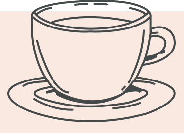
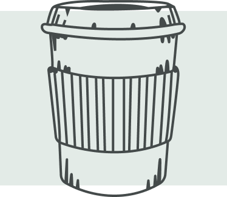

About Us
Coffee Shop Samwayle
Only one moment - when the barista reaches out over the bar to transfer the cup to the outstretched hand of the buyer. But this is exactly the moment when a connection arises between us and our guests.
And we strive to do our best to maintain this connection - starting with our commitment to selecting the highest quality coffee in the world and ending with how we interact with guests and organizations to fulfill our obligations.
Promotion
Coffee of the day
Americano coffee (Italian: Caffè Americano) is an espresso diluted with hot water. The presence of foam (cream) depends on how coffee and water are mixed. Attention! The concepts of “American” and “American coffee” should not be confused. n the second case, this refers not to diluted espresso, but to a drink prepared through a filter system.
Americano
The name Latte (from Italian “milk”) speaks about the main ingredient of the drink. It is recommended to take fat milk - at least 3.2%. In addition to it, milk foam.